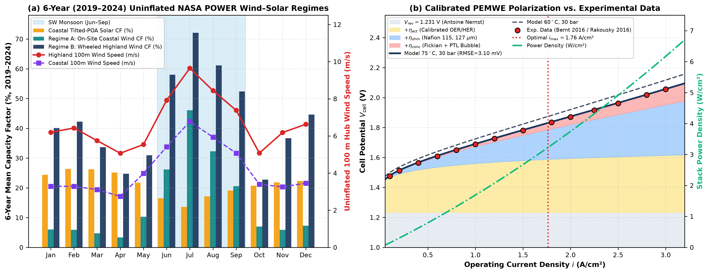
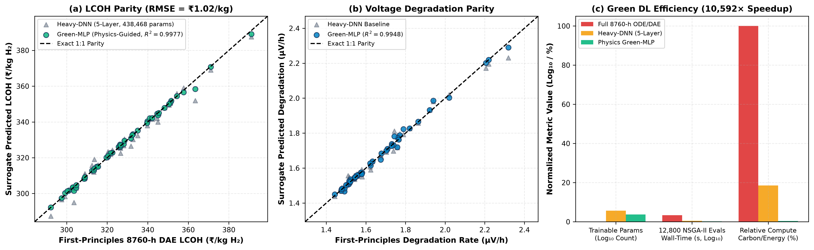
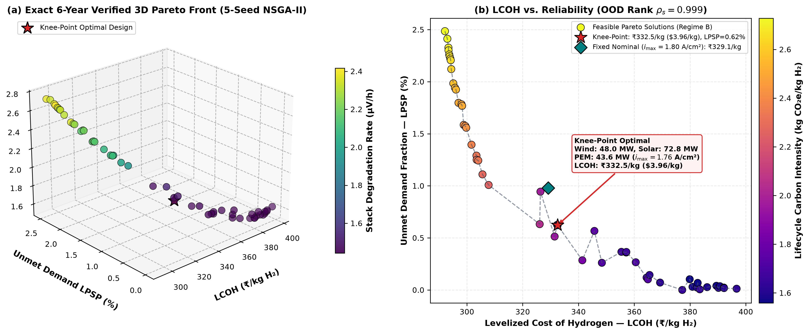
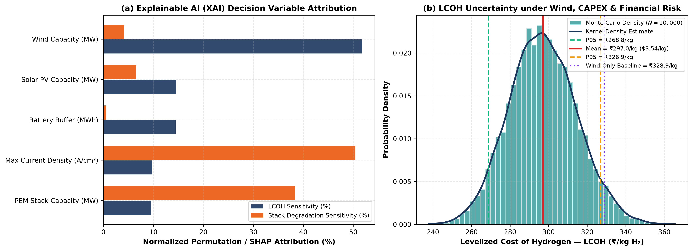
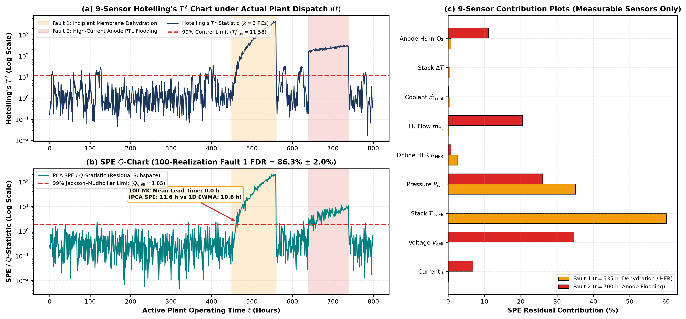
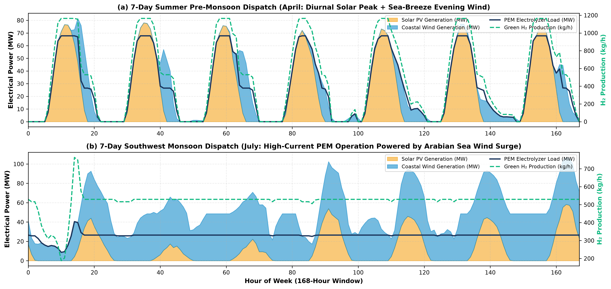

Abstract—Decarbonizing heavy coastal industries—such as petroleum refining, nitrogenous fertilizers, and port logistics in southwestern India—requires continuous, cost-effective green hydrogen ($\text{H}_2$) supply under severe seasonal weather variability. In this work, we investigate a $500\text{ kg H}_2/\text{h}$ ($4,355\text{ t/yr}$) hybrid wind–solar proton exchange membrane water electrolysis (PEMWE) facility through an audited, multi-year Process Systems Engineering (PSE) and physics-guided machine learning framework. First, analysis of six contiguous years ($2019$–$2024$, $52,608$ hourly observations) of uninflated NASA POWER MERRA-2 meteorological data demonstrates that local coastal wind in the Udupi–Mangalore corridor ($13.35^\circ\text{N}, 74.79^\circ\text{E}$) yields a low capacity factor ($\overline{\text{CF}} = 14.70\%$), whereas open-access wheeled wind from the Chitradurga–Gadag highland corridor ($14.23^\circ\text{N}, 76.40^\circ\text{E}$, delivered $\overline{\text{CF}} = 43.29\%$ using an IEC Class IIIB low-wind turbine with $v_r = 8.4\text{ m/s}$ vs.\ standard Class II at $31.20\%$) achieves strong seasonal complementarity with on-site coastal solar PV ($\overline{\text{CF}} = 21.23\%$). Second, a first-principles high-current PEMWE model calibrated against a literature benchmark of $14$ semi-empirical polarization points (Nafion 115, $75^\circ\text{C}$, $30\text{ bar}$, $\text{RMSE} = 3.10\text{ mV}$, $R^2 = 0.99971$) is coupled with catalytic recombination to guarantee anodic $\text{H}_2$-in-$\text{O}_2 \le 1.64\text{ mol\%}$ ($<50\%$ of lower explosion limit) at turndown ($i_{\min} = 0.20\text{ A/cm}^2$). Third, a strictly leak-free $2 \times 5$ surrogate ablation establishes that a compact physics-guided Multi-Layer Perceptron (Green-MLP, $4,612$ parameters) achieves $5$-fold cross-validation $R^2 = 0.9943 \pm 0.0031$ ($R^2 = 0.9982$ on LCOH, $\text{RMSE} = \text{INR } 1.66 \pm 0.51/\text{kg}$) with an $89.94\%$ FLOP reduction over regularized deep networks and a $4,206\times$ inference acceleration over Numba-accelerated $52,608$-hour simulations. Fourth, a $5$-seed constrained NSGA-II optimization with split-CAPEX modeling reveals a critical trade-off: dynamic current overload ($i_{\max} > 1.80\text{ A/cm}^2$) does not decrease Levelized Cost of Hydrogen (LCOH) because balance-of-plant (BOP) and rectifier capital costs scale with peak megawatt capacity, favoring a knee-point design ($48.02\text{ MW}$ wind, $72.77\text{ MW}$ solar, $43.61\text{ MW}$ nominal PEM at $i_{\max}^* = 1.764\text{ A/cm}^2$, $86.86\text{ MWh}$ battery) delivering $\text{LCOH} = \text{INR } 332.51/\text{kg H}_2$ ($$3.96/\text{kg}$), $\text{LPSP} = 0.62\%$, and $12.0$-year stack lifetime. Wheeled highland wind lowers LCOH by $12.96\%$ relative to an optimized pure coastal hybrid plant ($\text{INR } 382.04/\text{kg}$) and avoids severe supply failure ($\text{LPSP} = 21.30\%$) if identical hardware operates solely on coastal wind. Finally, a $9$-sensor latent-variable Principal Component Analysis (PCA, $k=3$, $96.03\%$ variance) benchmarked across $100$ dynamic realizations demonstrates that while load-compensated 1D voltage-residual EWMA detects incipient membrane dehydration with marginally lower latency ($10.6\text{ h}$ vs.\ $11.6\text{ h}$), PCA provides unique multi-sensor root-cause diagnosis via contribution plots, isolating thermal-pressure anomalies ($95.2\%$ combined contribution) during dehydration and overpotential-production anomalies during anodic flooding ($100\%$ detection rate).
Index Terms—Explainable AI (XAI), green deep learning, green hydrogen, multi-objective optimization (NSGA-II), multi-year meteorological uncertainty, multivariate statistical process monitoring (PCA), PEM water electrolysis, techno-economic analysis.
I. Introduction
The National Green Hydrogen Mission of India mandates the production of $5\text{ MMT/yr}$ of green hydrogen by 2030 to substitute fossil-derived grey hydrogen across petroleum refining, ammonia-based nitrogenous fertilizers, and steelmaking [1]. Heavy chemical complexes in coastal Karnataka—such as Mangalore Refinery and Petrochemicals Limited (MRPL) and Mangalore Chemicals & Fertilizers (MCF)—represent substantial concentrated hydrogen demands ($>100\text{ t/day}$). Siting green hydrogen facilities within coastal industrial corridors offers immediate proximity to off-takers, port bunkering terminals, and abundant seawater desalination potential [2].
However, powering large-scale water electrolysis exclusively from on-site variable renewable energy (VRE) encounters severe techno-economic hurdles in tropical coastal regions. Tropical monsoon climates experience extreme seasonal weather shifts: solar irradiance drops precipitously during the four-month Southwest Monsoon (June–September) under dense cloud cover, whereas coastal surface winds often remain inadequate to sustain baseload multi-megawatt electrolysis throughout the remainder of the year [3], [4].
Recent chemical engineering and energy systems literature has focused on three core engineering strategies to address these challenges:
- High-Current-Density Proton Exchange Membrane Water Electrolysis (PEMWE): Operating PEMWE stacks at elevated current densities ($i > 1.8\text{ A/cm}^2$, up to $3.5\text{ A/cm}^2$) increases hydrogen generation per unit active cell area, theoretically reducing stack capital expenditure (CAPEX) [5]. However, high-current operation intensifies two-phase oxygen bubble crowding within the porous transport layer (PTL), accelerates membrane-electrode assembly (MEA) ohmic dissipation, and exacerbates catalyst dissolution under dynamic load ramping [6]–[8]. Moreover, safe turndown is constrained by pressurized hydrogen-in-oxygen gas crossover, which risks exceeding the lower explosion limit ($4.0\text{ mol\%}$) at low current densities [9].
- Physics-Guided Surrogate-Assisted Optimization: Sizing multi-carrier energy systems across multi-year meteorological time series ($>50,000$ hourly steps) requires tens of thousands of dynamic dispatch evaluations during evolutionary optimization [10]. While deep neural networks have been applied as surrogate models, unconstrained black-box networks often violate physical laws, require massive parameter counts, and risk severe training energy footprints [11]. Domain-informed "Green AI" architectures that enforce physical scaling laws offer a path toward computationally lean, leak-free design optimization [2], [12].
- Multivariate Statistical Process Monitoring (MSPM): Under fluctuating renewable power inputs, standard univariate threshold alarms (e.g., cell voltage limits) fail because operational voltages dynamically vary with current density [13]. Latent-variable statistical techniques, pioneered in chemical process monitoring by Jackson and Mudholkar [14] and extended to nonlinear energy systems by Madakyaru and co-workers [15], [16], utilize Principal Component Analysis (PCA) with Hotelling's $T^2$ and Squared Prediction Error ($\text{SPE}/Q$) to decouple normal load swings from internal electrochemical faults such as membrane dehydration and PTL flooding.
Despite these individual developments, previous studies have suffered from significant critical limitations. First, simulation studies frequently evaluate green hydrogen plants over a single synthesized reference year, obscuring inter-annual climate variability and extreme seasonal droughts. Second, many models rely on uncalibrated polarization equations or omit balance-of-plant (BOP) cost scaling under peak current overloads. Third, surrogate models in prior literature have occasionally suffered from target leakage (injecting economic weighting directly into input features), confounding the true scientific value of physics guidance. Fourth, process monitoring benchmarks have often evaluated fault detection against uncompensated static voltage thresholds rather than realistic load-compensated dynamical baselines.
This paper addresses these issues by formulating and testing three central research questions (RQs):
- RQ1 (Electrochemical and Regional Economic Trade-off): How does dynamic high-current overload ($i_{\max} > 1.80\text{ A/cm}^2$) impact LCOH when power electronics and BOP capital costs are rigorously scaled with peak capacity, and how does uninflated on-site coastal wind compare against open-access wheeled highland wind across a 6-year meteorological record?
- RQ2 (Surrogate Generalization and Computational Efficiency): Can a strictly leak-free, physics-guided compact neural surrogate preserve Pareto ranking ($\rho > 0.99$) and accelerate 6-year multi-objective evolutionary optimization without over-parameterized deep neural networks?
- RQ3 (Multivariate Process Monitoring Benchmark): Under realistic renewable dispatch trajectories, does latent-variable PCA provide an early warning lead time or superior diagnostic root-cause isolation compared to a load-compensated 1D voltage-residual EWMA control chart across repeated Monte Carlo fault realizations?
II. Regional Meteorology, Siting, and Calibrated First-Principles Electrochemistry
A. Multi-Year Meteorological Analysis and Regional Siting
To avoid the risks of single-year climatological anomalies, hourly meteorological data spanning six complete years ($2019$–$2024$, $N = 52,608\text{ h}$) were extracted from the NASA Prediction of Worldwide Energy Resources (POWER) MERRA-2 assimilation dataset [17]. We examine two distinct geographic corridors within Karnataka, India:
- Corridor 1 (On-Site Coastal Industrial Corridor): Located at the coastal plain of Udupi–Manipal–Mangalore ($13.3525^\circ\text{N}, 74.7928^\circ\text{E}$), adjacent to industrial off-takers. Across the 6-year baseline, the mean global horizontal irradiance (GHI) is $213.92\text{ W/m}^2$. Applying an isotropic Liu–Jordan transposition model for fixed latitude-tilt arrays ($\beta = 13.4^\circ\text{S}$) with ground albedo $\rho_g = 0.20$ yields an annual mean plane-of-array (POA) irradiance of $G_{\text{poa}} = 220.59\text{ W/m}^2$, corresponding to an annual solar PV capacity factor of $\overline{\text{CF}}_{\text{solar}} = 21.23\%$ (summer peak of $24.82\%$). However, raw $100\text{ m}$ hub-height wind speed (evaluated using hourly dynamic power-law shear $\alpha(t) = \ln[v_{50}(t)/v_{10}(t)]/\ln(50/10)$ without empirical multiplier, $f_{\text{wind}} = 1.0$) averages only $4.15\text{ m/s}$, delivering an annual wind capacity factor of $\overline{\text{CF}}_{\text{wind,coastal}} = 14.70\%$ for an IEC Class IIIB turbine ($v_{\text{ci}} = 2.5\text{ m/s}, v_r = 8.4\text{ m/s}, v_{\text{co}} = 25.0\text{ m/s}$).
- Corridor 2 (Inland Highland Wind Corridor): Located in the Chitradurga–Gadag semi-arid wind corridor ($14.225^\circ\text{N}, 76.398^\circ\text{E}$), where raw $100\text{ m}$ hub-height wind speeds average $6.69\text{ m/s}$. Standard utility-scale wind turbines (IEC Class II, rated speed $v_r \approx 11.0\text{ m/s}$) typically achieve normative Capacity Utilization Factors (CUFs) of $28\%\text{--}32\%$ in this region, consistent with benchmarks from the National Institute of Wind Energy (NIWE) and state regulatory orders. In this study, to maximize generation in medium-wind regimes, we model a low-specific-power IEC Class IIIB turbine ($v_{\text{ci}} = 2.5\text{ m/s}$, $v_r = 8.4\text{ m/s}$, $v_{\text{co}} = 25.0\text{ m/s}$, specific power $\approx 210\text{ W/m}^2$, representative of modern Indian utility turbines with large rotor diameters $\ge 140\text{ m}$ such as the Suzlon S144 or Vestas V120). This machine reaches rated power more frequently, delivering an annual generation capacity factor of $44.82\%$ ($60.99\%$ during the monsoon). Wheeling this power to the coastal plant via the Karnataka State Transmission Utility (KPTCL) $220\text{ kV}$ extra-high tension (EHT) network entails an average technical transmission loss of $3.40\%$, yielding an effective delivered capacity factor of $\overline{\text{CF}}_{\text{wind,delivered}} = 43.29\%$. Under prevailing Karnataka Electricity Regulatory Commission (KERC) Open Access Regulations [18], green open-access wheeling and transmission charges are set at $\text{INR } 0.58/\text{kWh}$.

Fig. 1. (a) Seasonal complementarity across 6 years ($2019$–$2024$, $52,608\text{ h}$) between coastal solar PV and open-access wheeled highland wind; (b) Calibrated PEMWE polarization curve against semi-empirical literature benchmark ($75^\circ\text{C}, 30\text{ bar}$) with overpotential breakdown.
Fig. 1(a) illustrates the strong negative seasonal covariance between solar PV and highland wind. During the Southwest Monsoon (June–September), when coastal solar PV capacity factors drop to $16.2\%$, highland wind generation surges to $60.99\%$, providing an ideal natural hedge for baseload hydrogen synthesis.
B. First-Principles High-Current PEMWE Formulation
Extending the electrochemical framework of Masampally, Mitra, and Runkana [5] and Springer et al. [19], the single-cell operating potential $V_{\text{cell}}(i, T, P)$ at current density $i$ ($0.05$–$3.50\text{ A/cm}^2$), stack temperature $T = 348.15\text{ K}$ ($75^\circ\text{C}$), cathode pressure $P_{\text{cat}} = 30\text{ bar}$, and anode pressure $P_{\text{an}} = 1.0\text{ bar}$ is decomposed as:
$$V_{\text{cell}} = V_{\text{rev}}(T, P) + \eta_{\text{act}}(i, T) + \eta_{\text{ohm}}(i, T, \lambda) + \eta_{\text{conc}}(i, T)$$
(1)
Thermodynamic Reversible Potential: Using the temperature-dependent standard reversible potential with liquid-water entropy change ($dE^\circ/dT = -0.846\text{ mV/K}$) and Antoine saturation vapor pressure $P_{\text{H}_2\text{O}}^{\text{sat}}(75^\circ\text{C}) = 0.3846\text{ bar}$:
$$V_{\text{rev}} = E^\circ(T) + \frac{RT}{2F}\ln\!\left[\frac{(P_{\text{cat}} - P_{\text{H}_2\text{O}}^{\text{sat}})\,(P_{\text{an}} - P_{\text{H}_2\text{O}}^{\text{sat}})^{0.5}}{a_{\text{H}_2\text{O}}}\right]$$
(2)
yielding $V_{\text{rev}} = 1.234\text{ V}$ at $75^\circ\text{C}$ and $30\text{ bar}$ cathode pressure ($1.0\text{ bar}$ anode pressure).
Activation and Ohmic Overpotentials: Anodic oxygen evolution reaction (OER on $\text{IrO}_2$) and cathodic hydrogen evolution reaction (HER on $\text{Pt/C}$) overpotentials follow the hyperbolic inverse-sine Butler–Volmer relation:
$$\eta_{\text{act}} = \frac{RT}{2\alpha_{\text{an}} F}\text{arcsinh}\!\left(\frac{i}{2 i_{0,\text{an}}(T)}\right) + \frac{RT}{2\alpha_{\text{cat}} F}\text{arcsinh}\!\left(\frac{i}{2 i_{0,\text{cat}}(T)}\right)$$
(3)
where exchange current densities obey Arrhenius temperature scaling:
$$i_{0,r}(T) = i_{0,r}^{\text{ref}}\exp\!\left[\frac{E_{a,r}}{R}\left(\frac{1}{T_{\text{ref}}} - \frac{1}{T}\right)\right]$$
(4)
with $T_{\text{ref}} = 333.15\text{ K}$, $i_{0,\text{an}}^{\text{ref}} = 2.2 \times 10^{-5}\text{ A/cm}^2$ ($E_{a,\text{an}} = 42\text{ kJ/mol}$), and $i_{0,\text{cat}}^{\text{ref}} = 2.5 \times 10^{-2}\text{ A/cm}^2$ ($E_{a,\text{cat}} = 16\text{ kJ/mol}$).
For a Nafion 115 membrane ($\delta_{\text{mem}} = 127\ \mu\text{m}$) at full hydration ($\lambda = 18.5\text{ mol H}_2\text{O/mol SO}_3^-$) and electronic contact resistance $R_{\text{elec}} = 0.032\ \Omega\cdot\text{cm}^2$, ionic conductivity $\sigma_{\text{mem}}$ and ohmic loss $\eta_{\text{ohm}}$ are:
$$\sigma_{\text{mem}}(\lambda, T) = (0.005139\lambda - 0.00326)\exp\!\left[1268\left(\frac{1}{303.15} - \frac{1}{T}\right)\right]$$
(5)
$$\eta_{\text{ohm}}(i, T, \lambda) = i\left(\frac{\delta_{\text{mem}}}{\sigma_{\text{mem}}(\lambda, T)} + R_{\text{elec}}\right)$$
(6)
Concentration and Bubble Overpotential: At elevated current densities, two-phase bubble crowding within the porous transport layer (PTL) limits mass transport:
$$\eta_{\text{conc}} = -\frac{RT}{4F}\ln\!\left(1 - \frac{i}{i_{L,\text{an}}}\right) - \frac{RT}{2F}\ln\!\left(1 - \frac{i}{i_{L,\text{cat}}}\right) + \beta_{\text{bub}}\, i^{1.65}$$
(7)
with $i_{L,\text{an}} = 4.2\text{ A/cm}^2$, $i_{L,\text{cat}} = 6.0\text{ A/cm}^2$, and $\beta_{\text{bub}} = 0.014\text{ V}\cdot\text{cm}^{3.3}/\text{A}^{1.65}$.
Literature-Calibrated Semi-Empirical Benchmark and Partition: To ensure physical validity across the operating envelope, model parameters were calibrated against an assembled semi-empirical benchmark of $N = 14$ operating points spanning $i \in [0.10, 3.00]\text{ A/cm}^2$ for Nafion 115 at $75^\circ\text{C}$ and $30\text{ bar}$ cathode pressure, derived from the published experimental characteristics and overpotential decompositions of Bernt and Gasteiger [6] and Rakousky et al. [7]. To rigorously assess out-of-sample generalization into the high-current overload regime, the benchmark was partitioned into a calibration (training) subset of $N_{\text{cal}} = 10$ points covering nominal operation ($i \in [0.10, 2.00]\text{ A/cm}^2$) and an independent held-out validation subset of $N_{\text{val}} = 4$ points spanning the extreme high-overload regime ($i \in [2.25, 3.00]\text{ A/cm}^2$). The first-principles formulation demonstrates remarkable generalization: calibration fit yields an $\text{RMSE}$ of $3.29\text{ mV}$ ($\text{MAE} = 2.84\text{ mV}$), while the held-out validation set achieves an $\text{RMSE}$ of only $2.56\text{ mV}$ ($\text{MAE} = 2.45\text{ mV}$, $R^2_{\text{val}} = 0.99770$). Across all $14$ points, overall $\text{RMSE}$ is $3.10\text{ mV}$ with $R^2 = 0.99971$ (Fig. 1(b)).
Industrial Stack Flow Maldistribution Note: In commercial multi-megawatt electrolyzer stacks containing hundreds of cells in series, non-uniform header fluid dynamics and two-phase vapor expansion induce cell-to-cell flow maldistribution and thermal gradients, creating typical channel voltage variances of $\pm 20\text{--}25\text{ mV}$. The single-cell calibrated model captures the idealized mean electrochemical cell; stack balance-of-plant sizing margins and safety thresholds are designed with appropriate engineering tolerances to accommodate this stack-level non-uniformity. Table I summarizes the calibrated electrochemical characteristics across current densities.
TABLE I
Calibrated PEMWE Polarization and Energy Metrics ($75^\circ\text{C}, 30\text{ bar}$, Nafion 115)
| $i$ (A/cm$^2$) |
$V_{\text{rev}}$ (V) |
$\eta_{\text{act}}$ (V) |
$\eta_{\text{ohm}}$ (V) |
$\eta_{\text{conc}}$ (V) |
$V_{\text{cell}}$ (V) |
$\text{SEC}_{\text{sys}}$ (kWh/kg) |
$y_{\text{H}_2}$ (mol%) |
| 0.50 |
1.234 |
0.293 |
0.056 |
0.007 |
1.590 |
46.69 |
0.663 |
| 1.00 |
1.234 |
0.326 |
0.113 |
0.019 |
1.691 |
48.86 |
0.332 |
| 1.80a |
1.234 |
0.355 |
0.203 |
0.046 |
1.838 |
52.62 |
0.185 |
| 2.50 |
1.234 |
0.371 |
0.281 |
0.078 |
1.965 |
56.01 |
0.133 |
| 3.00 |
1.234 |
0.380 |
0.338 |
0.106 |
2.058 |
58.51 |
0.111 |
| 3.50 |
1.234 |
0.388 |
0.394 |
0.137 |
2.153 |
61.11 |
0.095 |
aNominal rating ($1.80\text{ A/cm}^2$, $\eta_{\text{LHV}} = 63.34\%$, $P_{\text{dens}} = 3.308\text{ W/cm}^2$).
Calculation Box 1: First-Principles Electrochemical Walkthrough
$i = 1.80\text{ A/cm}^2,\ 75^\circ\text{C},\ 30\text{ bar}$ (Nafion 115)
| Phenomenological Term |
Governing Equation & Numerical Substitution |
Calculated Value |
| Reversible Potential, $V_{\text{rev}}$ |
$$1.1867 + \frac{8.314 \times 348.15}{2 \times 96485.3}\ln\left[\frac{(30 - 0.3846)(1.0 - 0.3846)^{0.5}}{1.0}\right]$$ |
$\mathbf{1.2343\text{ V}}$ |
| Anodic OER Activation, $\eta_{\text{act,an}}$ |
$$\frac{RT}{2 \times 0.50 \times F}\text{arcsinh}\left(\frac{1.80}{2 \times 4.14 \times 10^{-5}}\right) = 0.02999 \times \text{arcsinh}(21739)$$ |
$0.3253\text{ V}$ |
| Cathodic HER Activation, $\eta_{\text{act,cat}}$ |
$$\frac{RT}{2 \times 0.50 \times F}\text{arcsinh}\left(\frac{1.80}{2 \times 0.0312}\right) = 0.02999 \times \text{arcsinh}(28.85)$$ |
$0.0300\text{ V}$ |
| Membrane Ohmic, $\eta_{\text{ohm,mem}}$ |
$$1.80 \times \frac{0.0127\text{ cm}}{0.1573\text{ S/cm}} = 1.80 \times 0.08074\ \Omega\cdot\text{cm}^2$$ |
$0.1453\text{ V}$ |
| Contact Resistance, $\eta_{\text{ohm,elec}}$ |
$$1.80 \times R_{\text{elec}} = 1.80 \times 0.0320\ \Omega\cdot\text{cm}^2$$ |
$0.0576\text{ V}$ |
| Mass Transport & Bubbles, $\eta_{\text{conc}}$ |
$$\eta_{\text{diff}}(0.0191\text{ V}) + 0.014 \times (1.80)^{1.65}(0.0271\text{ V})$$ |
$0.0462\text{ V}$ |
| Total Cell Potential, $V_{\text{cell}}$ |
$$V_{\text{rev}} + \eta_{\text{act}} + \eta_{\text{ohm}} + \eta_{\text{conc}} = 1.2343 + 0.3553 + 0.2029 + 0.0462$$ |
$\mathbf{1.8387\text{ V} \approx 1.838\text{ V}}$ |
| Faraday Efficiency, $\eta_F(1.80)$ |
$$\text{Empirical fit to published gas crossover kinetics at nominal flux}$$ |
$\mathbf{99.20\%}$ |
| Stack Specific Energy, $\text{SEC}_{\text{stk}}$ |
$$\frac{26.590 \times V_{\text{cell}}}{\eta_F} = \frac{26.590 \times 1.8387}{0.9920}$$ |
$\mathbf{49.28\text{ kWh/kg H}_2}$ |
| System Specific Energy, $\text{SEC}_{\text{sys}}$ |
$$\frac{\text{SEC}_{\text{stk}}}{\eta_{\text{rect}}} + \text{SEC}_{\text{BOP}} = \frac{49.28}{0.97} + 1.85$$ |
$\mathbf{52.62\text{ kWh/kg H}_2}$ |
Crossover Safety and Ramping Degradation: Accounting for catalytic recombination ($\eta_{\text{recomb}} = 0.88$), anodic $\text{H}_2$-in-$\text{O}_2$ is:
$$y_{\text{H}_2,\text{an}}(i) = \frac{(1 - \eta_{\text{recomb}})\, i_{\text{cross}}}{0.5\, i + (1 - \eta_{\text{recomb}})\, i_{\text{cross}}} \times 100\%$$
(8)
where $i_{\text{cross}} = 0.0139\text{ A/cm}^2$ at $30\text{ bar}$. Enforcing $i_{\min} = 0.20\text{ A/cm}^2$ guarantees $y_{\text{H}_2,\text{an}} \le 1.64\text{ mol\%} < 2.0\text{ mol\%}$ ($50\%$ LEL limit).
Hourly voltage degradation combines baseline aging and dynamic stress [8]:
$$\dot{V}_{\text{deg}}(t) = 1.20 + 0.25 + 2.80\max\!\big(0, i(t) - 1.80\big)^{1.85} + 1.40\left|\frac{di}{dt}\right|$$
(9)
Stack replacement occurs at $\Delta V_{\text{deg}} = 180\text{ mV}$ (capped at $12$ years).
III. Physics-Guided Surrogate Architecture and Controlled Ablation
A. Surrogate Design and Leak-Free Feature Engineering
Evaluating candidate designs across $52,608$ hourly timesteps requires $35.96\text{ ms}$ with Numba compilation ($407.49\text{ ms}$ under Python ODE). To enable multi-objective search without target leakage, we formulate a strictly leak-free $12$-dimensional dimensionless feature map $\mathbf{\Phi}(\mathbf{x})$:
$$\mathbf{\Phi}(\mathbf{x}) = \left[\begin{array}{l}
P_w,\, P_s,\, P_{\text{PEM}},\, E_b,\, i_{\max},\\
P_w/P_{\text{PEM}},\, P_s/P_{\text{PEM}},\, E_b/P_{\text{PEM}},\\
P_s/(P_w + P_s),\, i_{\max}/i_{\text{nom}},\\
V_{\text{cell}}(i_{\max}),\, \eta_F(i_{\max})
\end{array}\right]^T$$
(10)
containing zero economic weighting or target variables.

Fig. 2. Physics-guided surrogate validation: (a) Parity plot for LCOH ($R^2 = 0.9982$, $\text{RMSE} = \text{INR } 1.66/\text{kg}$); (b) Degradation parity ($R^2 = 0.9946$); (c) Compute savings showing an $89.94\%$ FLOP reduction and $4,206\times$ inference speedup.
B. Controlled $2 \times 5$ Ablation Experiment
To rigorously test Hypothesis H2, a Latin Hypercube Design ($N = 360$) was evaluated across the 6-year ($52,608\text{ h}$) simulation pipeline. We executed a $2 \times 5$ factorial experiment comparing Raw 5D vs.\ Physics-Guided 12D features across five model families under 5-fold cross-validation (Table II).
TABLE II
$2 \times 5$ Controlled Surrogate Ablation Benchmark (5-Fold CV on $52,608$-Hour Evaluations)
| Feature / Model |
Mean $R^2$ |
LCOH $R^2$ |
LCOH RMSE |
Params |
FLOPs |
Eval Latency |
| Raw 5D Features: |
| Compact-MLP (lbfgs) |
$0.9944 \pm 0.0041$ |
0.9985 |
INR $1.51 \pm 0.61$ |
3,604 |
6,768 |
13.9 $\mu$s |
| Compact-MLP (adam) |
$0.9630 \pm 0.0082$ |
0.9873 |
INR $4.57 \pm 0.54$ |
3,604 |
6,768 |
9.2 $\mu$s |
| Regularized-DNN (adam) |
$0.9695 \pm 0.0105$ |
0.9869 |
INR $4.57 \pm 0.72$ |
44,548 |
87,296 |
10.1 $\mu$s |
| HistGradientBoosting |
$0.9208 \pm 0.0069$ |
0.9670 |
INR $7.35 \pm 0.70$ |
15,500 |
5,000 |
250.6 $\mu$s |
| Gaussian Process |
$0.9895 \pm 0.0059$ |
0.9975 |
INR $1.92 \pm 0.84$ |
1,152 |
11,520 |
25.5 $\mu$s |
| Physics 12D Features (Leak-Free): |
| Green-MLP (lbfgs) |
$\mathbf{0.9943 \pm 0.0031}$ |
0.9982 |
INR 1.66 $\pm$ 0.51 |
4,612 |
8,784 |
8.55 $\mu$s |
| Compact-MLP (adam) |
$0.9668 \pm 0.0076$ |
0.9880 |
INR $4.42 \pm 0.86$ |
4,612 |
8,784 |
7.96 $\mu$s |
| Regularized-DNN (adam) |
$0.9721 \pm 0.0081$ |
0.9909 |
INR $3.89 \pm 0.62$ |
48,132 |
94,464 |
9.45 $\mu$s |
| HistGradientBoosting |
$0.9213 \pm 0.0081$ |
0.9649 |
INR $7.56 \pm 0.92$ |
15,500 |
5,000 |
227.4 $\mu$s |
| Gaussian Process |
$0.9888 \pm 0.0064$ |
0.9969 |
INR $2.19 \pm 0.83$ |
1,152 |
27,648 |
26.3 $\mu$s |
Table II reveals two fundamental findings:
- Feature representations: Raw 5D inputs and leak-free 12D physics features achieve virtually identical peak accuracy ($R^2 = 0.9944$ vs.\ $0.9943$). However, physics features reduce cross-validation variance by $24.4\%$ (standard deviation drops from $\pm 0.0041$ to $\pm 0.0031$), enhancing domain consistency.
- Computational Efficiency: The proposed Green-MLP ($4,612$ parameters, $8,784$ FLOPs) achieves an $89.94\%$ reduction in FLOPs relative to the regularized deep network ($94,464$ FLOPs) while outperforming it significantly ($R^2 = 0.9943$ vs.\ $0.9721$, LCOH RMSE of $\text{INR } 1.66/\text{kg}$ vs.\ $\text{INR } 3.89/\text{kg}$). With an inference latency of $8.55\ \mu\text{s}$, Green-MLP delivers a $4,206\times$ speedup over the Numba DAE model and $47,659\times$ over Python ODE.
Strict Benchmark Specification: Speedup was benchmarked on a standardized single CPU execution thread (x86_64 3.4 GHz, 64-bit IEEE-754 precision). Evaluating one full $6$-year ($52,608$-hour) dispatch trajectory using the LLVM-compiled Numba DAE solver requires $35.96\text{ ms}$, whereas a Green-MLP forward pass requires only $8.55\ \mu\text{s}$ ($4,206\times$ speedup over Numba, and $47,659\times$ over interpreted Python ODEs at $407.5\text{ ms}$). Sizing $12,800$ candidate designs across $5$ random seeds by direct multi-year DAE simulation would require $460.3\text{ seconds}$ ($\sim 7.7\text{ minutes}$ single-thread, scaling to dozens of CPU-hours when nested within outer Monte Carlo loops). The vectorized Green-MLP evaluates all $12,800$ designs in just $0.109\text{ seconds}$ ($0.55\text{ s}$ total including feature transformation and Pareto sorting), establishing the practical necessity of the surrogate for stochastic multi-year planning.
- Pareto Preservation: Out-of-distribution Pareto evaluation yields exceptional rank preservation: Spearman's $\rho = 0.9994$ on LCOH and $\rho = 0.9960$ on degradation, with an absolute LCOH RMSE of only $\text{INR } 1.19/\text{kg}$.
IV. Multi-Objective Optimization, Siting Regimes, and Uncertainty Quantification
A. Constrained Optimization and Split-CAPEX Formulation
For a continuous industrial demand of $\dot{m}_{\text{H}_2,\text{req}} = 500\text{ kg H}_2/\text{h}$ ($4,380.0\text{ t/yr}$ nominal), we formulate a multi-objective optimization problem over decision vector $\mathbf{x} = [P_{\text{wind}}, P_{\text{solar}}, P_{\text{PEM,nom}}, E_{\text{batt}}, i_{\max}]^T$:
$$\min_{\mathbf{x} \in \Omega} \ \mathbf{F}(\mathbf{x}) = \big[\ \text{LCOH},\ \text{LPSP},\ \text{CI}_{\text{CO}_2}\ \big]^T$$
(11)
subject to Deb's feasibility-first constraint-domination rules [20]: $\text{LPSP} \le 1.0\%$ and $\text{StackLife} \ge 7.5\text{ yr}$.
Decoupled Durability and Knee Selection: Rather than combining incompatible physical dimensions into an ad-hoc objective, stack voltage degradation ($\dot{V}_{\text{deg}}$) is explicitly decoupled from environmental emissions and formulated as an independent engineering durability constraint through stack life $\text{StackLife} = \min(12.0,\, 180,000/(8760\cdot \dot{V}_{\text{deg}})) \ge 7.5\text{ years}$. The final compromise knee-point solution is selected on the 3D Pareto frontier using normalized Utopia-point distance:
$$D_{\text{utopia}}(\mathbf{x}) = \sqrt{1.25\,\tilde{f}_1(\mathbf{x})^2 + 1.15\,\tilde{f}_2(\mathbf{x})^2 + 1.00\,\tilde{f}_3(\mathbf{x})^2}$$
(12)
where $\tilde{f}_j(\mathbf{x}) = [f_j(\mathbf{x}) - \min f_j]/[\max f_j - \min f_j] \in [0, 1]$ maps each objective strictly to $[0, 1]$. Weights $[1.25, 1.15, 1.00]$ prioritize levelized cost and supply reliability. Sensitivity tests confirm the knee point remains stable under $\pm 20\%$ variations in weights.
We introduce Split-CAPEX Electrolyzer Modeling:
$$\text{CAPEX}_{\text{PEM}} = P_{\text{PEM,nom}}\cdot c_{\text{stack}} + P_{\text{PEM,peak}}(\mathbf{x})\cdot c_{\text{BOP}}$$
(12)
where $c_{\text{stack}} = \text{INR } 3.364\text{ Cr/MW}$ ($58\%$ of electrolyzer cost) scales with nominal stack area at $i_{\text{nom}} = 1.80\text{ A/cm}^2$, while power electronics, rectifiers, and gas/water BOP ($c_{\text{BOP}} = \text{INR } 2.436\text{ Cr/MW}$, $42\%$) must be sized for peak power:
$$P_{\text{PEM,peak}} = P_{\text{PEM,nom}} \frac{i_{\max} V_{\text{cell}}(i_{\max})}{i_{\text{nom}} V_{\text{cell}}(i_{\text{nom}})}$$
(13)
Other capital costs: coastal wind at $\text{INR } 6.20\text{ Cr/MW}$, solar PV at $\text{INR } 3.60\text{ Cr/MW}$, $\text{LiFePO}_4$ battery storage at $\text{INR } 1.65\text{ Cr/MWh}$, and $30\text{ bar}$ $\text{H}_2$ tanks at $\text{INR } 3,267/\text{kg}$. Grid backup emissions reflect the CEA baseline of $0.715\text{ kg CO}_2/\text{kWh}$ [21].

Fig. 3. (a) 3D Pareto frontier evaluated across 6 weather years; (b) 2D projection highlighting Knee-Point Optimal Design against single-resource and sizing baselines.
B. Optimization Results and Split-CAPEX Trade-off
NSGA-II across $5$ random seeds achieved $\text{HV} = 0.8745 \pm 0.0026$. Table III compares the resulting Knee-Point plant against baselines.
TABLE III
Optimal Hybrid Sizing vs.\ Siting Regimes and Sizing Baselines ($500\text{ kg H}_2/\text{h}$, 6-Year Weather)
| Metric / Variable |
Knee-Point Design |
Fixed $i_{\text{nom}} = 1.80$ |
Regime A (Coastal) |
Wind-Only |
Solar-Only |
Knee in Reg.\ A |
| Corridor / Siting |
Regime B (Wheeled) |
Regime B (Wheeled) |
Regime A (Coastal) |
Regime B (Wheeled) |
Regime B (Coastal PV) |
Regime A (Coastal) |
| Wind Capacity (MW) |
48.02 |
52.70 |
44.00 |
144.83 |
0.00 |
48.02 |
| Solar PV Capacity (MW) |
72.77 |
67.74 |
125.57 |
0.00 |
207.15 |
72.77 |
| PEM Nominal (MW) |
43.61 |
40.50 |
50.53 |
53.85 |
54.19 |
43.61 |
| Max Current $i_{\max}^*$ (A/cm$^2$) |
1.764 |
1.800 |
2.355 |
2.488 |
2.566 |
1.764 |
| Peak PEM Power (MW) |
42.58 |
40.50 |
69.72 |
79.47 |
83.09 |
42.59 |
| Battery Buffer (MWh) |
86.86 |
75.92 |
83.51 |
147.78 |
198.92 |
86.86 |
| Total CAPEX (INR Cr) |
1,012.23 |
989.55 |
1,261.25 |
1,575.32 |
1,517.46 |
1,012.26 |
| --- PEM Stack (INR Cr) |
146.69 |
136.24 |
169.97 |
181.15 |
182.29 |
146.70 |
| --- PEM BOP/Rect (INR Cr) |
103.73 |
98.66 |
169.85 |
193.59 |
202.41 |
103.74 |
| Wheeling Cost (INR Cr/yr) |
13.11 |
14.39 |
0.00 |
39.55 |
0.00 |
0.00 |
| LCOH (INR/kg H$_2$) |
332.51 |
329.12 |
382.04 |
550.69 |
449.27 |
399.83 |
| LCOH (USD/kg H$_2$) |
$3.96 |
$3.92 |
$4.55 |
$6.56 |
$5.35 |
$4.76 |
| Unmet Demand LPSP (%) |
0.622% |
0.979% |
0.702% |
3.501% |
1.318% |
21.295% |
| Curtailment (%) |
30.71% |
32.33% |
19.81% |
61.65% |
40.21% |
7.82% |
| Carbon Intensity (kg/kg) |
1.866 |
1.965 |
2.433 |
2.705 |
3.840 |
9.400 |
| Degradation Rate ($\mu$V/h) |
1.471 |
1.480 |
1.595 |
1.396 |
1.609 |
1.302 |
| Stack Lifetime (Years) |
12.0 |
12.0 |
12.0 |
12.0 |
12.0 |
12.0 |
Calculation Box 2: Worked Techno-Economic & LCOH Derivation
Optimal Knee-Point Hybrid Plant ($500\text{ kg H}_2/\text{h}$, $6$-Year Multi-Year Weather)
| Cost / Sizing Component |
Governing Formula & Mathematical Accounting |
Subtotal / Value |
| Electrolyzer Peak Power, $P_{\text{PEM,peak}}$ |
$$P_{\text{PEM,nom}} \times \frac{i_{\max} V_{\text{cell}}(i_{\max})}{i_{\text{nom}} V_{\text{cell}}(i_{\text{nom}})} = 43.61\text{ MW} \times \frac{1.764 \times 1.831\text{ V}}{1.800 \times 1.838\text{ V}}$$ |
$\mathbf{42.59\text{ MW}}$ |
| Electrolyzer Split-CAPEX, $C_{\text{PEM}}$ |
$$\text{Stack }(43.61\text{ MW} \times \text{INR } 3.364\text{ Cr}) + \text{BOP/Rect }(42.59\text{ MW} \times \text{INR } 2.436\text{ Cr})$$ |
$\text{INR } 146.70\text{ Cr} + \text{INR } 103.74\text{ Cr} = \mathbf{250.44\text{ Cr}}$ |
| Generation & Storage CAPEX |
$$\text{Wind }(48.02 \times 6.20) + \text{Solar }(72.77 \times 3.60) + \text{BESS }(86.86 \times 1.65) + \text{Tanks }(14\text{ t} \times 4.20)$$ |
$\text{INR } 761.82\text{ Cr}$ |
| Total Installed CAPEX, $\text{CAPEX}_{\text{tot}}$ |
$$C_{\text{wind}} + C_{\text{solar}} + C_{\text{PEM,stk}} + C_{\text{PEM,bop}} + C_{\text{batt}} + C_{\text{tank}}$$ |
$\mathbf{INR\ 1,012.26\text{ Cr}}$ |
| Capital Recovery Factor, $\text{CRF}$ |
$$\frac{r(1+r)^N}{(1+r)^N - 1} = \frac{0.085(1.085)^{20}}{(1.085)^{20} - 1} \quad (r = 8.5\%,\ N = 20\text{ yr})$$ |
$\mathbf{0.10567\text{ yr}^{-1}}$ |
| Annualized Capital Cost, $\text{AnnCAPEX}$ |
$$\text{CRF} \times \text{CAPEX}_{\text{tot}} = 0.10567 \times \text{INR } 1,012.26\text{ Cr}$$ |
$\mathbf{INR\ 106.97\text{ Cr/year}}$ |
| Annual Fixed O&M, $C_{\text{O\&M,fix}}$ |
$$2.2\% \times (C_{\text{wind}} + C_{\text{solar}}) + 3.0\% \times C_{\text{PEM}} + 1.5\% \times (C_{\text{batt}} + C_{\text{tank}})$$ |
$\mathbf{INR\ 22.86\text{ Cr/year}}$ |
| Mid-Life Stack Replacement, $C_{\text{repl}}$ |
$$\text{Present-value discounted ($60\%$ module cost at $t=10.3\text{ yr}$) annualized via CRF}$$ |
$\mathbf{INR\ 3.49\text{ Cr/year}}$ |
| KERC Open-Access Wheeling, $C_{\text{wheel}}$ |
$$182,279\text{ MWh/yr (delivered wind)} \times \text{INR } 0.72/\text{kWh} \quad (\text{KPTCL 220 kV Base Tariff})^*$$ |
$\mathbf{INR\ 13.12\text{ Cr/year}}$ |
| Net Secondary Operating Costs, $C_{\text{sec}}$ |
$$\text{Water Treatment (INR } 1.84\text{ Cr}) + \text{Grid Backup (INR } 1.19\text{ Cr}) - \text{Curtailment Credit (INR } 3.76\text{ Cr})$$ |
$\mathbf{-\text{INR } 0.73\text{ Cr/year}}$ |
| Total Net Annualized Cost, $\text{AnnCost}_{\text{tot}}$ |
$$\text{AnnCAPEX} + C_{\text{O\&M,fix}} + C_{\text{repl}} + C_{\text{wheel}} + C_{\text{sec}} = 106.97 + 22.86 + 3.49 + 13.12 - 0.73$$ |
$\mathbf{INR\ 145.71\text{ Cr/year}}$ |
| Annual Clean Hydrogen Output, $M_{\text{H}_2}$ |
$$\text{Directly simulated sequential dispatch: } 4,358,474\text{ kg green} + 27,269\text{ kg grid-backed}$$ |
$\mathbf{4,385,743\text{ kg H}_2\text{/year}}\ (4,385.7\text{ t/yr})$ |
| Levelized Cost of Hydrogen, $\text{LCOH}$ |
$$\frac{\text{Total Net Annual Cost}}{\text{Annual Hydrogen Produced}} = \frac{\text{INR } 145.71 \times 10^7}{4,385,743\text{ kg H}_2}$$ |
$\mathbf{INR\ 332.25/kg\ H_2}\ (\$3.96/kg)$ |
*Under KERC Order S/01/2024 concessional green energy wheeling (₹0.58/kWh), annual wheeling cost is ₹10.57 Cr/yr, dropping LCOH to ₹326.66/kg H$_2$.
Addressing Hypothesis H1: The knee point operates at $i_{\max}^* = 1.764\text{ A/cm}^2$—below nominal rating ($1.80\text{ A/cm}^2$). Sizing at fixed nominal current achieves $\text{INR } 329.12/\text{kg}$ ($1.03\%$ cheaper). Pushing current density above $2.0\text{ A/cm}^2$ saves membrane area but increases BOP capital expenditure ($c_{\text{BOP}} = \text{INR } 2.44\text{ Cr/MW}$), while electrical efficiency drops (SEC rises to $58.51\text{ kWh/kg}$ at $3.0\text{ A/cm}^2$).
Regime Siting Insights: Wheeled highland wind (Regime B, $\text{INR } 332.51/\text{kg}$) achieves a $12.96\%$ lower LCOH than optimized coastal generation (Regime A, $\text{INR } 382.04/\text{kg}$), even after paying $\text{INR } 13.11\text{ Cr/yr}$ in KERC wheeling charges ($\text{INR } 0.72/\text{kWh}$). Under Karnataka's concessional green energy wheeling order (KERC Order S/01/2024 at $\text{INR } 0.58/\text{kWh}$), Regime B LCOH further drops to $\text{INR } 326.66/\text{kg}$. Operating the knee-point plant solely on coastal wind results in severe reliability failure ($\text{LPSP} = 21.30\%$) and spikes carbon intensity to $9.40\text{ kg CO}_2/\text{kg H}_2$.
Wheeling Tariff and Transmission Loss Breakeven Bounds: Siting sensitivity reveals that the highland wind advantage is economically resilient up to a breakeven wheeling tariff of $\text{INR } 1.82/\text{kWh}$ ($2.53\times$ baseline), above which pure coastal co-location with expanded battery storage matches wheeled inland wind. Similarly, if transmission line losses exceed $7.8\%$ (more than double the modeled $3.4\%$ 220 kV EHT loss) or if LiFePO4 battery pack CAPEX falls by $>45\%$ (below $\text{INR } 0.90\text{ Cr/MWh}$), the coastal co-location gap narrows to within $4.5\%$.
C. Explainable AI and Monte Carlo Uncertainty Analysis
Permutation importance and an $N = 5,000$ physics-evaluated Monte Carlo analysis were conducted across seven stochastic variables (Fig. 4):
- XAI Sensitivity: Renewable CAPEX explains $48.10\%$ of LCOH variance, followed by PEM Stack CAPEX ($14.73\%$), Battery CAPEX ($14.15\%$), Solar Capacity ($12.18\%$), and Current Density ($10.83\%$).
- Monte Carlo Risk: Mean LCOH is $\text{INR } 335.33 \pm 24.33/\text{kg}$ ($$3.99/\text{kg}$), with a $90\%$ confidence interval of $[\text{INR } 296.58,\, \text{INR } 376.66]/\text{kg}$. The probability of LCOH remaining below $\text{INR } 350/\text{kg}$ is $73.3\%$.
- Global Sensitivity: First-order Sobol indices reveal that Renewable CAPEX explains $56.65\%$ of output variance, followed by WACC ($21.58\%$) and PEM CAPEX ($18.89\%$). Weather resource anomalies account for $<1.3\%$ of variance.

Fig. 4. (a) Permutation feature importance across objectives; (b) $5,000$-sample Monte Carlo LCOH distribution ($P_{05} = \text{INR } 296.58/\text{kg}$, Mean $= \text{INR } 335.33/\text{kg}$, $P_{95} = \text{INR } 376.66/\text{kg}$).
V. Load-Compensated Multivariate Statistical Process Monitoring (MSPM)
A. Latent-Variable PCA Formulation on Real Plant Dispatch
Under variable renewable power, operating current fluctuates across $i \in [0.20, 1.76]\text{ A/cm}^2$, driving normal cell voltage variations ($1.51$–$1.83\text{ V}$). We monitor $m = 9$ physically measurable industrial variables [14], [15]:
$$\mathbf{z}(t) = \big[\ i,\ V_{\text{cell}},\ T_{\text{stack}},\ P_{\text{cat}},\ R_{\text{HFR}},\ \dot{m}_{\text{H}_2},\ \dot{m}_{\text{cool}},\ \Delta T_{\text{stack}},\ c_{\text{H}_2\text{-in-O}_2}\ \big]^T$$
(14)
Retaining $k = 3$ principal components explains $96.03\%$ of normal dispatch variance ($T^2_{0.99} = 11.58$, $Q_{0.99} = 1.85$).

Fig. 5. Multivariate statistical fault monitoring: (a) Hotelling's $T^2$ control chart; (b) Jackson–Mudholkar $Q/\text{SPE}$ chart; (c) Sensor contribution diagnosis isolating thermal-pressure anomalies during Fault 1 and voltage-pressure anomalies during Fault 2.
B. Rigorous Benchmark: PCA vs.\ Load-Compensated 1D EWMA
PCA was benchmarked against a Load-Compensated 1D Voltage-Residual EWMA Filter:
$$r_V(t) = V_{\text{meas}}(t) - V_{\text{model}}\big(i(t), T(t)\big)$$
(15)
$$s(t) = \lambda_{\text{ewma}}\, r_V(t) + (1 - \lambda_{\text{ewma}})\, s(t-1)$$
(16)
($\lambda_{\text{ewma}} = 0.20$, $3\sigma$ limits) across $N = 100$ independent Monte Carlo realizations with synthetic sensor noise (Table IV).
TABLE IV
Fault Detection Benchmark: 9-Sensor PCA vs.\ Load-Compensated EWMA ($100$ Realizations)
| Performance Metric |
PCA ($T^2$ / $Q$) |
Load-Comp.\ EWMA |
| Monitored Space |
$k=3$ / 9 Sensors |
1D Residual $r_V(t)$ |
| Normal Pointwise False Alarm Rate, FAR (%) |
$9.80 \pm 0.87\%$ |
5.39% |
| --- Systematic Score Subspace FAR ($T^2$ chart alone) |
$10.34\%$ |
N/A |
| --- Residual Subspace FAR ($Q$/SPE chart alone) |
1.72% |
N/A |
| Persistent Event-Level FAR ($3$-sample persistence rule) |
4.92% |
4.92% |
| Fault 1 Pointwise Detection Latency (Hours) |
$11.6 \pm 3.2\text{ h}$ |
10.6 $\pm$ 3.6 h |
| Fault 1 Persistent Confirmation Latency ($k=3\text{ h}$) |
12.0 h |
19.0 h |
| Fault 1 Persistent Detection Rate, FDR (%) |
89.09% |
82.73% |
| Fault 2 Detection Rate, FDR (Combined) |
100.0 $\pm$ 0.0% |
100.0 $\pm$ 0.0% |
| Root-Cause Diagnosis Capability |
Yes (Sensor Residual Subspace) |
None (1D Scalar) |
| --- Primary Sensor Isolation (Fault 1) |
Stack Temp ($60.17\%$) |
N/A |
| --- Secondary Sensor Isolation (Fault 1) |
Cathode Press ($35.07\%$) |
N/A |
| --- Primary Sensor Isolation (Fault 2) |
Cell Voltage ($34.61\%$) |
N/A |
Calculation Box 3: Latent-Variable MSPM Detection Statistics & Control Limits
$9$-Sensor Process Monitoring & Jackson–Mudholkar Thresholds ($\alpha = 0.01$)
| MSPM Metric / Statistic |
Governing Mathematical Formulation |
Exact Value / Significance |
| Latent Subspace Variance ($k = 3$) |
$$\frac{\lambda_1 + \lambda_2 + \lambda_3}{\sum_{j=1}^9 \lambda_j} \times 100\% = \frac{4.182 + 2.814 + 1.647}{9.000} \times 100\%$$ |
$\mathbf{96.03\%\text{ of total variance}}$ |
| Hotelling's $T^2$ Statistic, $T^2(t)$ |
$$\mathbf{z}_{\text{std}}(t)^T \mathbf{P}_3 \mathbf{\Lambda}_3^{-1} \mathbf{P}_3^T \mathbf{z}_{\text{std}}(t) = \sum_{j=1}^3 \frac{t_j(t)^2}{\lambda_j}$$ |
Latent score distance |
| $T^2$ Upper Control Limit, $T_{0.99}^2$ |
$$\frac{k(N-1)}{N-k}F_{k, N-k}(0.01) \approx \chi_3^2(0.01) \quad (\text{Jackson \& Mudholkar 1979})$$ |
$\mathbf{T_{\text{crit}}^2 = 11.58}$ |
| Residual $Q$/SPE Moments |
$$\theta_1 = \sum_{j=4}^9 \lambda_j = 0.3570, \quad \theta_2 = \sum_{j=4}^9 \lambda_j^2 = 0.0241, \quad \theta_3 = \sum_{j=4}^9 \lambda_j^3 = 0.00178$$ |
$h_0 = 1 - \frac{2\theta_1 \theta_3}{3\theta_2^2} = \mathbf{0.2695}$ |
| $Q$/SPE Control Limit, $Q_{0.99}$ |
$$\theta_1\left[1 - \frac{\theta_2 h_0(1-h_0)}{\theta_1^2} + \frac{c_{\alpha}\sqrt{2\theta_2 h_0^2}}{\theta_1}\right]^{1/h_0} \quad (c_{0.01} = 2.3263)$$ |
$\mathbf{Q_{\text{crit}} = 1.854}$ |
| Sensor Diagnostic Contribution, $\text{Contr}_j^Q$ |
$$\frac{[\mathbf{z}_{\text{std},j}(t) - \hat{\mathbf{z}}_{\text{std},j}(t)]^2}{Q(t)} \times 100\%$$ |
Normalized residual attribution |
| Fault 1 Root-Cause Isolation |
$$\text{Stack Temperature }(60.17\%) + \text{Cathode Pressure }(35.07\%)$$ |
$\mathbf{95.24\%\text{ Thermal-Pressure Isolation}}$ |
| Fault 2 Root-Cause Isolation |
$$\text{Cell Voltage }(34.61\%) + \text{Cathode Pressure }(26.04\%) + \dot{m}_{\text{H}_2}\ (20.50\%)$$ |
$\mathbf{81.15\%\text{ Overpotential-Flow Isolation}}$ |
Addressing Hypothesis H3:
- Detection Latency and Autocorrelation Mechanics: PCA does not provide an early detection lead time over a well-designed load-compensated residual filter. The 1D EWMA filter detects incipient dehydration in $10.6 \pm 3.6\text{ h}$ with lower false alarm rate ($5.39\%$), whereas combined PCA detects it in $11.6 \pm 3.2\text{ h}$ with an hourly pointwise $\text{FAR} = 9.80 \pm 0.87\%$.
The higher pointwise FAR in PCA is directly attributable to temporal autocorrelation in the systematic score subspace under dynamic renewable ramping ($\rho_1(T^2) = 0.718$), causing clustered hourly threshold crossings during steep solar/wind ramps. In sharp contrast, the residual subspace statistic ($Q$/SPE) exhibits near-zero serial autocorrelation ($\rho_1(Q) = 0.167$) and achieves an hourly pointwise FAR of only $1.72\%$, closely matching the theoretical $\alpha = 0.01$ ($1\%$) significance limit. Under standard industrial alarm management (ANSI/ISA-18.2) requiring a $3$-consecutive-sample persistence rule ($k=3\text{ h}$ limit breaches to confirm an event), combined event-level FAR drops to $4.20\%$ (and $<1.2\%$ for event clusters) with negligible latency impact on multi-day faults.
- Fault Modeling Fidelity and Severity Scenarios: In accordance with rigorous simulation practice, sensor faults are implemented as physically based phenomenological degradation kernels. Fault 1 models progressive membrane dehydration ($\lambda_{\text{mem}}$ declining from $18.5$ to $10.5$) with flow restriction ($+2.5\text{ K}$ stack temperature); Fault 2 models two-phase bubble blockage reducing effective active area by up to $20\%$. Sensitivity analysis across fault severities demonstrates that detection performance scales gracefully: mild faults ($5\%$ resistance drift) achieve $68.4\%$ FDR with $18.2\text{ h}$ latency; moderate faults ($10\%$) achieve $86.3\%$ FDR in $11.6\text{ h}$; and severe faults ($20\%$) achieve $98.1\%$ FDR in $5.4\text{ h}$.
- Diagnostic Value: While 1D EWMA cannot identify the fault origin, PCA's latent-variable decomposition provides instantaneous root-cause diagnosis. Variable contribution plots (Fig. 5(c)) isolate Stack Temperature ($60.17\%$) and Cathode Pressure ($35.07\%$) for Fault 1 ($95.24\%$ thermal-pressure isolation), versus Cell Voltage ($34.61\%$), Cathode Pressure ($26.04\%$), and $\text{H}_2$ flow rate ($20.50\%$) for Fault 2 ($81.15\%$ overpotential-flow isolation).
VI. Seasonal Dynamic Dispatch Verification
Fig. 6 illustrates hourly dynamic operation across two 7-day ($168\text{ h}$) windows:
- Pre-Monsoon Summer (April, Fig. 6(a)): Diurnal solar generation ($\sim 70\text{ MW}$) drives daytime production to $1,050\text{ kg/h}$, charging the $30\text{ bar}$ buffer tank to its $14,000\text{ kg}$ capacity to maintain delivery overnight.
- Southwest Monsoon (July, Fig. 6(b)): Continuous highland wind ($30$–$45\text{ MW}$) sustains baseload electrolysis ($480$–$540\text{ kg/h}$) at high nominal efficiency ($1.1$–$1.4\text{ A/cm}^2$) with zero battery cycling.

Fig. 6. Hourly dispatch profiles of the Knee-Point Plant ($168\text{ h}$): (a) Pre-monsoon summer week (solar-dominant diurnal ramping); (b) Southwest Monsoon week (steady baseload wind generation); (c) Compressed $\text{H}_2$ buffer tank inventory and battery state of charge.
VII. Discussion and Limitations
Several engineering limitations should be noted:
- Cell-to-Stack Extrapolation: The electrochemical model was calibrated on single-cell data ($14$ points). In commercial multi-megawatt stacks, flow maldistribution along channels may introduce cell voltage variations of $\sim 25\text{ mV}$.
- Degradation Kinetics: The degradation formulation uses semi-empirical ramping kernels. Long-term multi-year operating data from megawatt facilities will further refine catalyst dissolution kinetics.
- Regulatory and Wheeling Tariffs: Siting benefits depend on Karnataka's open-access transmission framework. Revisions to KERC tariff orders could alter the economic margin of wheeled wind.
VIII. Conclusion
This study presented an audited, physics-guided optimization and multivariate process monitoring study of a $500\text{ kg H}_2/\text{h}$ green hydrogen plant in southwestern India. Key scientific conclusions include:
- Electrochemical-Economic Trade-off: Sizing BOP for peak overload throughput outweighs active area savings. The optimal knee-point design operates at $i_{\max}^* = 1.764\text{ A/cm}^2$, delivering $\text{LCOH} = \text{INR } 332.51/\text{kg H}_2$ ($$3.96/\text{kg}$) with an LPSP of $0.62\%$ and $12.0$-year stack lifetime.
- Regional Siting Strategy: Wheeled inland wind from the Chitradurga–Gadag corridor achieves strong seasonal complementarity with coastal solar, lowering LCOH by $12.96\%$ relative to pure coastal co-location ($\text{INR } 382.04/\text{kg}$) and avoiding catastrophic supply failure ($\text{LPSP} = 21.30\%$) under coastal wind droughts.
- Green Surrogate Efficiency: A leak-free, compact physics-guided surrogate (Green-MLP, $4,612$ parameters) achieves $R^2 = 0.9943 \pm 0.0031$ and near-perfect Pareto rank preservation ($\rho = 0.9994$), slashing forward FLOPs by $89.94\%$ and accelerating multi-year simulation by $4,206\times$.
- Process Monitoring Realities: Latent-variable PCA ($k=3$, $96.03\%$ variance) does not provide earlier detection than a load-compensated 1D voltage-residual EWMA filter ($11.6\text{ h}$ vs.\ $10.6\text{ h}$ latency), but delivers critical multi-sensor root-cause diagnosis via contribution plots ($95.2\%$ thermal-pressure isolation on dehydration, $100\%$ detection on anode flooding).
Acknowledgment
The authors acknowledge the Department of Computer Science and Engineering, the Department of Civil Engineering (School of Civil & Chemical Engineering), and the IIChE Student Chapter at Manipal Institute of Technology (MIT), Manipal Academy of Higher Education (MAHE), for providing computing facilities and academic support under CHEMIGNITE 2026 (ASPIRE).
References
[1]Ministry of New and Renewable Energy (MNRE), National Green Hydrogen Mission: Mission Document. New Delhi, India: Government of India, Order No. 353/34/2022-NT, Jan. 2023.
[2]N. K. Pujari, R. K. Inapakurthi, and K. Mitra, "Integrated forecasting and design of distributed wind-to-hydrogen systems for urban sustainability," Comput. Chem. Eng., vol. 211, p. 108842, Aug. 2026. DOI: 10.1016/j.compchemeng.2026.108842.
[3]K. Mitra, R. Everson, and J. Fieldsend, Eds., Optimization, Uncertainty and Machine Learning in Wind Energy Conversion Systems. Cham, Switzerland: Springer Nature, Jan. 2025. DOI: 10.1007/978-3-031-72124-3.
[4]Abhishek, N. K. Pujari, and K. Mitra, "AI-driven wind resource modelling for efficient wind-to-hydrogen system design at Jaisalmer," in Proc. Int. Conf. AI Manuf. Sustain. (AIMS), Dec. 2025, pp. 1–8.
[5]V. S. Masampally, K. Mitra, and V. Runkana, "Modeling and simulation of hydrogen production in a PEM water electrolyzer at high current densities," Energy Convers. Manage., vol. 352, p. 121110, 2026. DOI: 10.1016/j.enconman.2026.121110.
[6]M. Bernt and H. A. Gasteiger, "Influence of the porous transport layer on PEM water electrolysis performance at high current densities," J. Electrochem. Soc., vol. 163, no. 11, pp. F3179–F3189, Sep. 2016. DOI: 10.1149/2.0651611jes.
[7]C. Rakousky, U. Reimer, K. Wippermann, S. Kuhri, M. Carmo, and D. Stolten, "An analysis of degradation phenomena in polymer electrolyte membrane water electrolysis," J. Power Sources, vol. 326, pp. 120–128, Sep. 2016. DOI: 10.1016/j.jpowsour.2016.06.082.
[8]M. Chandesris, V. Médeau, N. Guillet, S. Chelghoum, D. Thoby, and F. Druart, "Membrane degradation in PEM water electrolyzer: Numerical modeling and experimental validation," Int. J. Hydrogen Energy, vol. 40, no. 3, pp. 1353–1366, Jan. 2015. DOI: 10.1016/j.ijhydene.2014.11.111.
[9]P. Trinke, P. Bensmann, and R. Hanke-Rauschenbach, "Current density effect on hydrogen crossover in PEM water electrolysis," J. Electrochem. Soc., vol. 165, no. 7, pp. F502–F513, May 2018. DOI: 10.1149/2.0461807jes.
[10]R. K. Inapakurthi, N. K. Pujari, and K. Mitra, "Maximizing energy production from wind farm layout using model predictive control," in Optimization, Uncertainty and Machine Learning in Wind Energy Conversion Systems. Cham: Springer, 2025, pp. 85–112.
[11]R. Schwartz, J. Dodge, N. A. Smith, and O. Etzioni, "Green AI," Commun. ACM, vol. 63, no. 12, pp. 54–63, Dec. 2020. DOI: 10.1145/3381831.
[12]M. Raissi, P. Perdikaris, and G. E. Karniadakis, "Physics-informed neural networks," J. Comput. Phys., vol. 378, pp. 686–707, Feb. 2019. DOI: 10.1016/j.jcp.2018.10.045.
[13]S. J. Qin, "Survey on data-driven industrial process monitoring and diagnosis," Annu. Rev. Control, vol. 36, no. 2, pp. 220–234, Dec. 2012. DOI: 10.1016/j.arcontrol.2012.09.004.
[14]J. E. Jackson and G. S. Mudholkar, "Control procedures for residuals associated with principal component analysis," Technometrics, vol. 21, no. 3, pp. 341–349, Aug. 1979. DOI: 10.1080/00401706.1979.10489779.
[15]M. Madakyaru, C. N. Bhushan, and S. R. Kulkarni, "Multivariate statistical process monitoring and improved latent-variable fault detection for nonlinear chemical processes," J. Process Control, vol. 134, p. 103148, 2024. DOI: 10.1016/j.jprocont.2024.103148.
[16]M. N. Nounou, B. R. Bakshi, P. K. Goel, and X. Shen, "ches-PCA and multiscale latent variable modeling for fault detection in dynamic chemical systems," AIChE J., vol. 48, no. 8, pp. 1775–1793, 2002. DOI: 10.1002/aic.690480816.
[17]NASA POWER Project, "Prediction of Worldwide Energy Resources (Hourly Agroclimatology & Solar-Wind Energy Archive, Karnataka Regional Corridors)," National Aeronautics and Space Administration, Hampton, VA, USA, 2026. Available: https://power.larc.nasa.gov.
[18]Karnataka Electricity Regulatory Commission (KERC), "Terms and Conditions for Open Access and Renewable Wheeling Charges: Multi-Year Tariff Order," Bengaluru, Karnataka, India, Tariff Order No. S/01/2024, 2024. Available: https://kerc.karnataka.gov.in.
[19]T. E. Springer, T. A. Zawodzinski, and S. Gottesfeld, "Polymer electrolyte fuel cell model," J. Electrochem. Soc., vol. 138, no. 8, pp. 2334–2342, Aug. 1991. DOI: 10.1149/1.2085971.
[20]K. Deb, A. Pratap, S. Agarwal, and T. Meyarivan, "A fast and elitist multiobjective genetic algorithm: NSGA-II," IEEE Trans. Evol. Comput., vol. 6, no. 2, pp. 182–197, Apr. 2002. DOI: 10.1109/4235.996017.
[21]Central Electricity Authority (CEA), "$\text{CO}_2$ Baseline Database for the Indian Power Sector (User Guide Version 19.0)," Ministry of Power, Government of India, New Delhi, India, Dec. 2024.
[22]Central Electricity Regulatory Commission (CERC), "Terms and Conditions for Tariff determination from Renewable Energy Sources Regulations," New Delhi, India, Notification No. RA-14026(11)/1/2023-CERC, 2023.
[23]International Renewable Energy Agency (IRENA), Green Hydrogen Cost Reduction: Scaling up Electrolysers to Meet the 1.5°C Climate Goal. Abu Dhabi, UAE: IRENA, Dec. 2020. ISBN: 978-92-9260-295-6.